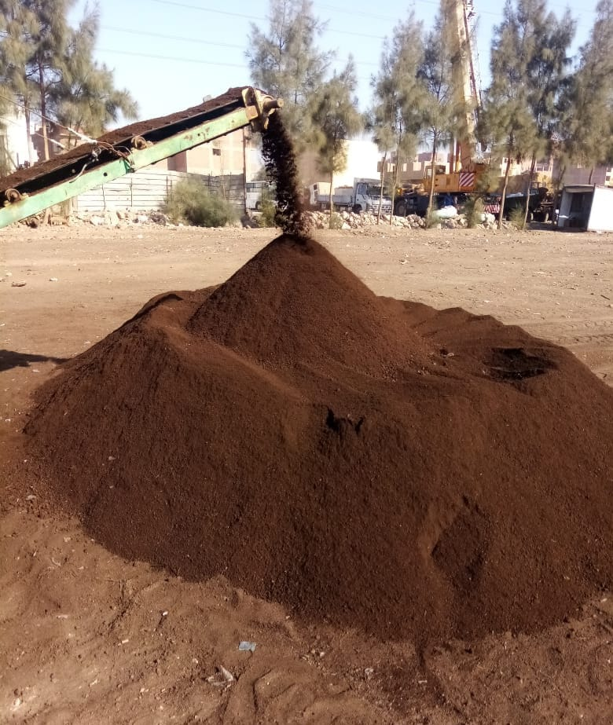

It is a decomposed organic fertilizer resulting from the aerobic composting process, crushing vegetable crops and animal dung
1 - It was manufactured with abundant experience and a
large number of experiments to produce the finest and
suitable for the Egyptian market .
2- Choosing the raw material very carefully,
high quality .
3 - In its production, it follows credibility, honesty and
high quality, away from fraud and manipulation of the
product and the customer .
4 - Inoculation is done during the manufacturing process
with microorganisms specialized in the decomposition process,
which leads to a rise in temperature and killing of weed
seeds, nematodes and harmful bacteria, in addition to
fertilization with organisms that stabilize all major and
minor elements .
1 - It reduces the final economic cost as it saves the
use of chemicals, herbicides, fungicides and labor.
2 - It builds the texture of sandy soil, causes cohesion of
light soil, and helps to disintegrate heavy soil, and thus
works to improve the soil.
3 - Creating conditions for the roots of plants to absorb
all elements and supply them with organic matter to build a
strong plant and warm the root system, which works to
increase and abundant production.
4- It contains beneficial microorganisms that protect plants
against diseases.
5- It has no unpleasant odor, has a brown color, and a
homogeneous spongy texture, indicating maturity.
6- Free from weed seeds, nematodes and pathogens.
7 - It contains a high percentage of the macro and
microelement that the new reclaimed lands are deficient in,
and thus fertilize the soil.
1- Mix the compost in the soil well, stir it and make it
moist .
2 - In the case of fertilizing trees, it is spread around
the tree and mixed with the surface layer, or two trenches
are made on the edge of the shade, at a distance of 20:30 cm,
and backfilled.
3- In the case of planting in trenches, the fertilizer is
mixed with the excavation yield, the backfill is re-filled,
and the seedlings are planted.
4- In the case of greenhouses and field crops, manure,
plowing and irrigation are spread directly .
5- In the case of vegetable cultivation, it is scattered
between lines and backfilling, then planting and irrigating
directly.
6- In the case of green areas, a layer is spread under it in
construction or a layer above it in service.


We succeeded in a lot of manufacturing for others in the case of quantities for large farms only by carrying out the process of recycling the plant waste present in the farm, such as medicinal and aromatic plants, with simple additions to it, and producing good special compost that conforms to international standards, full maturity, rich in organic matter and all nutrients and completely without weed seeds, nematodes and pathogens, which It helps to save more than 50% of the cost, increase production, and be organic or clean farming

١- شبت
٢- بقدونس
٣-كزيرة